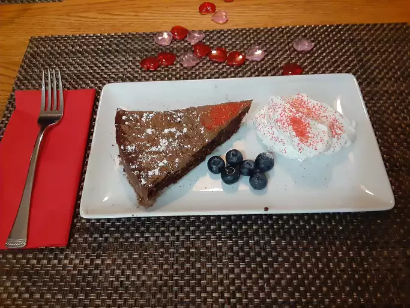

Salsa Chicken

Description
-
Preheat the oven to 350 degrees F (175 degrees C). Generously grease an 8-inch cake pan with butter, and place a round piece of parchment paper in the bottom. Dust the inside and sides with flour and knock out access. Set aside.
-
Place chocolate and butter in a mixing bowl, and place on top of a saucepan filled with 1 inch of water. Place on low heat until the butter and chocolate have melted.
-
Remove from heat, and stir together with a spatula. Stir in almond meal, cocoa powder, coffee liqueur, salt, and cayenne until fully combined. Set aside.
-
Combine eggs and sugar in a second bowl, and beat with an electric mixer, or whisk by hand until very thick and pale colored.
-
Pour chocolate mixture into the egg mixture; fold in gently with a spatula until just combined. Transfer batter into the prepared pan. Tap pan on the counter to settle the mixture.
-
Bake in the preheated oven until a wooden skewer inserted near the center comes out almost clean, 25 to 30 minutes.
-
Let cool for 30 minutes in the pan before turning out onto a plate. Let cool to room temperature, before wrapping and transferring into the fridge to chill before serving.
-
Before cutting, the top can be dusted with cocoa and/or powdered sugar if desired. Serve with unsweetened whipped cream and fresh raspberries.
Ingredients
- 6 ounces dark chocolate (70% cacao), chopped into small pieces
- 10 tablespoons unsalted butter, at room temperature
- 1 cup ground almond meal (also know as almond flour)
- 2 tablespoons unsweetened cocoa powder
- 1 tablespoon coffee liqueur
- ½ teaspoon kosher salt
- tiny pinch cayenne pepper (Optional)
- 4 large eggs, at room temperature
- ¾ cup white granulated sugar